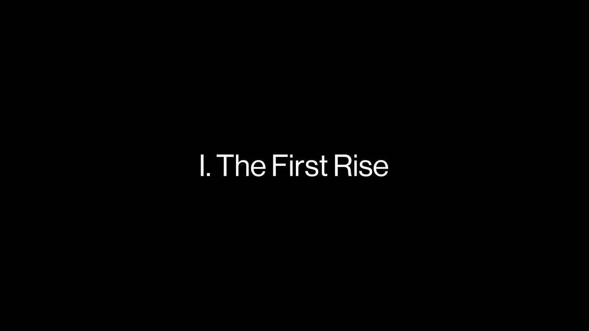
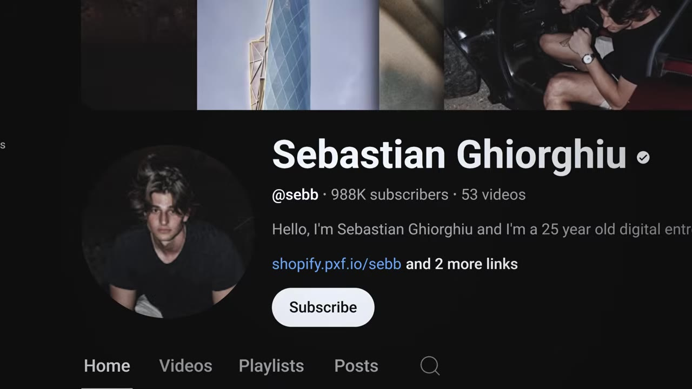
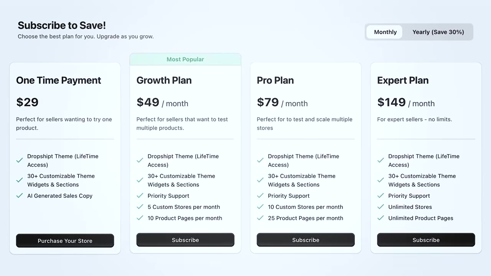
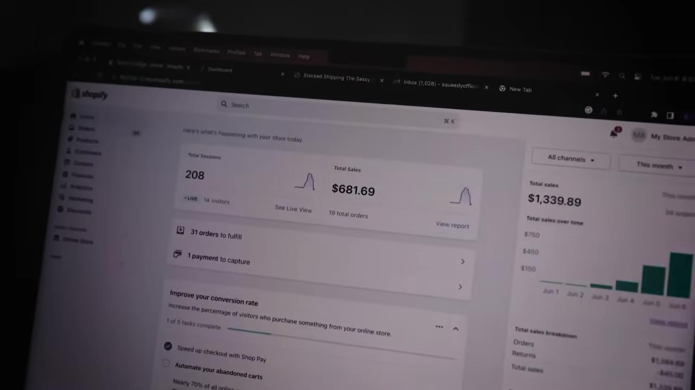
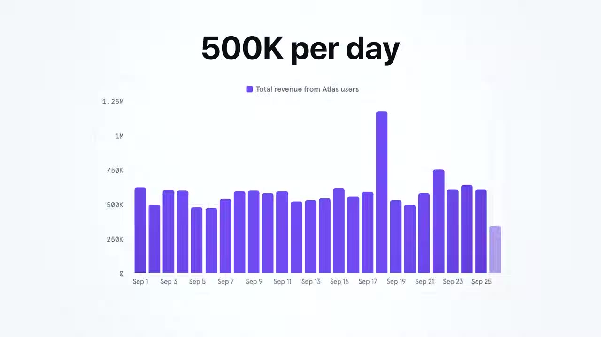
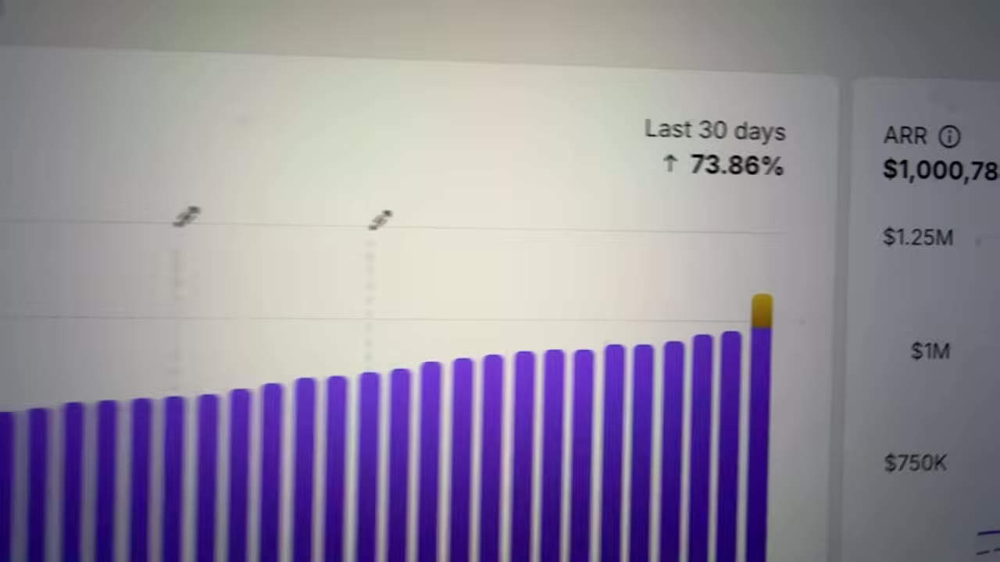

Sebastian Ghiorghiu spent eight years monetizing his own face — drop shipping, YouTube, agencies, affiliate. Then he quit posting to find out if he could build a real business without it. The side project he wasn't taking seriously became Atlas: a Shopify app at 10,000+ paying customers and the fastest app one investor had seen hit $1M ARR.
Watch on YouTubeSebastian Ghiorghiu grew up broke — single mom, three siblings — and at 17 found he could make money online with drop shipping. When people started watching him talk about it, everything sped up. For eight years he jumped between drop shipping, YouTube, affiliate marketing, an agency, investing, even day trading.

I wasn't exactly building businesses. I was monetizing attention in different ways for the most part. Different ways to extract money from the same asset, which was my face.— Sebastian Ghiorghiu
A jack of all trades, master of none — and one question that wouldn't leave: am I even capable of building something real, something that doesn't collapse the second I step away from it?
At the height of it he stopped. No more Reels, no more YouTube videos. He had no idea where to start, so he did nothing — traveled, found a girl, spent down his savings. On the side he was quietly tinkering with a Shopify app: an AI store builder meant to help drop shippers spin up a store and product pages in one click.

The early version was rough — bad copy, bad theme, bad layouts, pure MVP. But he kept seeing more potential in it, and figured this side project might be the real business he was after.
They shipped it to the Shopify App Store anyway, just to see. Day one, four or five people paid $14 each. He was confused — he knew it wasn't good. But the buying didn't stop, so he read the signal: the market actually wants this. Make it better and they'll pay more.

At ~$20K MRR, he and his co-founder hit a breaking point — different work styles damaging the relationship. One of them had to go. The choice: walk away and let the dream die, or spend over six figures in cash to buy out the co-founder's equity. He'd already put in $50K and months of his life into a risky, faceless, brand-new business.

On January 6th, I bet everything on myself, in all caps. And with that out of the way, the path was clear and we locked in hard.— Sebastian Ghiorghiu
He pushed all his chips in. Boats burned, back against the wall — swim or drown.
January hit $35K MRR, then stalled and started dying — a slow decline that cost about 25% of monthly income. He was sure he wasn't cut out for it. But the way through was obvious: build something so good he'd use it himself. They asked what drop shippers actually care about and rebuilt around it — a high-converting theme, product-page sections, bundles, upsells — and shipped Atlas 2.0.

Right before his wedding and a long stretch in Europe, he got connected to Ben Jabbawy — founder of Privy, one of the most popular apps in Shopify history, sold for over $100M. Ghiorghiu prepped like it was a dream scenario, because it was. Jabbawy loved the business and the energy — without knowing about the YouTube channel, the cars, or the followers.
This is insane and I believe in you guys. You guys are a rocket ship.— Ben Jabbawy, to Ghiorghiu
For the first time someone believed in him as a CEO, not as a creator. It broke a wall of limiting beliefs. Jabbawy took an advisor seat and today sits on the Atlas board.
He left for three months in Europe — Italy, Monaco for the F1, Barcelona, Paris, Switzerland, Vienna, Romania, London, New York on the way back — fully expecting the business to slow while he was away and working less.
It did the opposite. Over the honeymoon, Atlas went from $100K MRR to over $250K — most of it while he was traveling. He credits the team he'd built: they knew what to do without him in the room, which was the whole point of the experiment.
Back home, the CEO of Mantle told him Atlas may have set the record for the fastest Shopify app he'd seen reach $1M ARR.

I'm no longer the product. The product is the product. And one of the most important parts is that they love it even though they don't know that I'm the one that built it.— Sebastian Ghiorghiu
He runs into Atlas users at ecom events who have no idea it's his. The honest accounting at the end: still tons of bugs, feature requests, problems — and ~15 people on the team whose only job is making the product better. 10,000+ paying customers, $250K+ MRR. Not the biggest business in the world, but the one he'd always wanted to prove he could build. Chapter one.